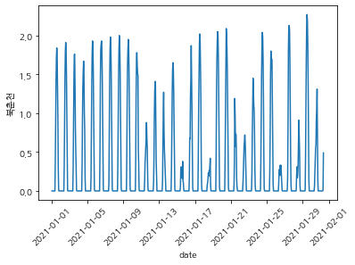

<class 'pandas.core.frame.DataFrame'>
RangeIndex: 18250 entries, 0 to 18249
Data columns (total 45 columns):
# Column Non-Null Count Dtype
--- ------ -------------- -----
0 date 18250 non-null object
1 북춘천 18250 non-null float64
2 철원 18250 non-null float64
3 대관령 18250 non-null float64
4 춘천 18250 non-null float64
5 백령도 18250 non-null float64
6 북강릉 18250 non-null float64
7 강릉 18250 non-null float64
8 서울 18250 non-null float64
9 인천 18250 non-null float64
10 원주 18250 non-null float64
11 울릉도 18250 non-null float64
12 수원 18250 non-null float64
13 서산 18250 non-null float64
14 청주 18250 non-null float64
15 대전 18250 non-null float64
16 추풍령 18250 non-null float64
17 안동 18250 non-null float64
18 포항 18250 non-null float64
19 대구 18250 non-null float64
20 전주 18250 non-null float64
21 창원 18250 non-null float64
22 광주 18250 non-null float64
23 부산 18250 non-null float64
24 목포 18250 non-null float64
25 여수 18250 non-null float64
26 흑산도 18250 non-null float64
27 고창 18250 non-null float64
28 홍성 18250 non-null float64
29 제주 18250 non-null float64
30 고산 18250 non-null float64
31 진주 18250 non-null float64
32 고창군 18250 non-null float64
33 영광군 18250 non-null float64
34 김해시 18250 non-null float64
35 순창군 18250 non-null float64
36 북창원 18250 non-null float64
37 양산시 18250 non-null float64
38 보성군 18250 non-null float64
39 강진군 18250 non-null float64
40 의령군 18250 non-null float64
41 함양군 18250 non-null float64
42 광양시 18250 non-null float64
43 청송군 18250 non-null float64
44 경주시 18250 non-null float64
dtypes: float64(44), object(1)
memory usage: 6.3+ MBFutureWarning: Treating datetime data as categorical rather than numeric in `.describe` is deprecated and will be removed in a future version of pandas. Specify `datetime_is_numeric=True` to silence this warning and adopt the future behavior now.
df['date'].describe()count 18250
unique 16060
top 2021-08-13 07:00:00
freq 2
first 2021-01-01 00:00:00
last 2022-12-31 21:00:00
Name: date, dtype: object| date | 북춘천 | 철원 | 대관령 | 춘천 | 백령도 | 북강릉 | 강릉 | 서울 | 인천 | ... | 순창군 | 북창원 | 양산시 | 보성군 | 강진군 | 의령군 | 함양군 | 광양시 | 청송군 | 경주시 | |
|---|---|---|---|---|---|---|---|---|---|---|---|---|---|---|---|---|---|---|---|---|---|
| 0 | 2021-01-01 00:00:00 | 0.0 | 0.0 | 0.0 | 0.0 | 0.0 | 0.0 | 0.0 | 0.0 | 0.0 | ... | 0.0 | 0.0 | 0.0 | 0.0 | 0.0 | 0.0 | 0.0 | 0.0 | 0.0 | 0.0 |
| 1 | 2021-01-01 01:00:00 | 0.0 | 0.0 | 0.0 | 0.0 | 0.0 | 0.0 | 0.0 | 0.0 | 0.0 | ... | 0.0 | 0.0 | 0.0 | 0.0 | 0.0 | 0.0 | 0.0 | 0.0 | 0.0 | 0.0 |
| 2 | 2021-01-01 02:00:00 | 0.0 | 0.0 | 0.0 | 0.0 | 0.0 | 0.0 | 0.0 | 0.0 | 0.0 | ... | 0.0 | 0.0 | 0.0 | 0.0 | 0.0 | 0.0 | 0.0 | 0.0 | 0.0 | 0.0 |
| 3 | 2021-01-01 03:00:00 | 0.0 | 0.0 | 0.0 | 0.0 | 0.0 | 0.0 | 0.0 | 0.0 | 0.0 | ... | 0.0 | 0.0 | 0.0 | 0.0 | 0.0 | 0.0 | 0.0 | 0.0 | 0.0 | 0.0 |
| 4 | 2021-01-01 04:00:00 | 0.0 | 0.0 | 0.0 | 0.0 | 0.0 | 0.0 | 0.0 | 0.0 | 0.0 | ... | 0.0 | 0.0 | 0.0 | 0.0 | 0.0 | 0.0 | 0.0 | 0.0 | 0.0 | 0.0 |
5 rows × 45 columns
# 2021-01-01 부터 한달간.
sns.lineplot(data=df[:760], x='date', y='북춘천')
plt.xticks(rotation=45)
plt.show()
# 최근 10일간
sns.lineplot(data=df[df.shape[0]-250:], x='date', y='북춘천')
plt.xticks(rotation=45)
plt.show()
ARIMA
# 시계열 모델 생성
model_series = tsa.seasonal_decompose(y1, model = 'additive')
# 모델 시각화
fig = model_series.plot()
plt.show()/home/jy/anaconda3/envs/torch/lib/python3.8/site-packages/statsmodels/tsa/seasonal.py:338: UserWarning: Glyph 8722 (\N{MINUS SIGN}) missing from current font.
fig.tight_layout()
/home/jy/anaconda3/envs/torch/lib/python3.8/site-packages/IPython/core/pylabtools.py:152: UserWarning: Glyph 8722 (\N{MINUS SIGN}) missing from current font.
fig.canvas.print_figure(bytes_io, **kw)- Fig1: 트렌드 O
- Fig2: 계절성 O
- Fig3: 잔차
–에러
/home/jy/anaconda3/envs/torch/lib/python3.8/site-packages/statsmodels/tsa/base/tsa_model.py:471: ValueWarning: A date index has been provided, but it is not monotonic and so will be ignored when e.g. forecasting.PeriodIndex(['2021-01-01 00:00', '2021-01-01 01:00', '2021-01-01 02:00',
'2021-01-01 03:00', '2021-01-01 04:00', '2021-01-01 05:00',
'2021-01-01 06:00', '2021-01-01 07:00', '2021-01-01 08:00',
'2021-01-01 09:00',
...
'2022-05-26 16:00', '2022-05-26 17:00', '2022-05-26 18:00',
'2022-05-26 19:00', '2022-05-26 07:00', '2022-05-26 20:00',
'2022-05-26 06:00', '2022-05-26 21:00', '2022-05-26 05:00',
'2022-05-27 00:00'],
dtype='period[H]', name='date', length=12776)PeriodIndex(['2021-01-01 00:00', '2021-01-01 01:00', '2021-01-01 02:00',
'2021-01-01 03:00', '2021-01-01 04:00', '2021-01-01 05:00',
'2021-01-01 06:00', '2021-01-01 07:00', '2021-01-01 08:00',
'2021-01-01 09:00',
...
'2022-05-26 16:00', '2022-05-26 17:00', '2022-05-26 18:00',
'2022-05-26 19:00', '2022-05-26 07:00', '2022-05-26 20:00',
'2022-05-26 06:00', '2022-05-26 21:00', '2022-05-26 05:00',
'2022-05-27 00:00'],
dtype='period[H]', name='date', length=12776)### 에러.. (시간빠진부분 있어서 그런듯)
for param in pdq:
for param_seasonal in seasonal_pdq:
try:
mod = tsa.statespace.SARIMAX(y, order=param,
seasonal_order=param_seasonal,
enforce_stationarity=False,
enforce_invertibility=False)
results = mod.fit()
param_list.append(param)
param_seasonal_list.append(param_seasonal)
results_AIC_list.append(results.aic)
results_MSE_list.append(results.mse)
except:
continue| Parameter | Seasonal | AIC | |
|---|---|---|---|
| 56 | (1, 1, 1) | (0, 0, 0, 12) | -27.919333 |
| 57 | (1, 1, 1) | (0, 0, 1, 12) | -17.887908 |
| 60 | (1, 1, 1) | (1, 0, 0, 12) | -17.191112 |
| 61 | (1, 1, 1) | (1, 0, 1, 12) | -16.236937 |
| 24 | (0, 1, 1) | (0, 0, 0, 12) | 2.108300 |
| ... | ... | ... | ... |
| 50 | (1, 1, 0) | (0, 1, 0, 12) | 729.258196 |
| 18 | (0, 1, 0) | (0, 1, 0, 12) | 819.565003 |
| 8 | (0, 0, 1) | (0, 0, 0, 12) | 930.795162 |
| 1 | (0, 0, 0) | (0, 0, 1, 12) | 1035.717831 |
| 0 | (0, 0, 0) | (0, 0, 0, 12) | 1470.861058 |
64 rows × 3 columns
mod = tsa.statespace.SARIMAX(y1, order=(1,1,1),
seasonal_order=(0,0,0,12),
enforce_stationarity=False,
enforce_invertibility=False)
results = mod.fit()
print(results.summary().tables[1])==============================================================================
coef std err z P>|z| [0.025 0.975]
------------------------------------------------------------------------------
ar.L1 0.2286 0.035 6.544 0.000 0.160 0.297
ma.L1 -1.0822 0.017 -64.958 0.000 -1.115 -1.050
sigma2 0.0476 0.003 18.244 0.000 0.043 0.053
============================================================================== SARIMAX Results
==============================================================================
Dep. Variable: 북춘천 No. Observations: 730
Model: SARIMAX(1, 1, 1) Log Likelihood 16.960
Date: Mon, 10 Apr 2023 AIC -27.919
Time: 17:29:21 BIC -14.153
Sample: 01-01-2021 HQIC -22.607
- 12-31-2022
Covariance Type: opg
==============================================================================
coef std err z P>|z| [0.025 0.975]
------------------------------------------------------------------------------
ar.L1 0.2286 0.035 6.544 0.000 0.160 0.297
ma.L1 -1.0822 0.017 -64.958 0.000 -1.115 -1.050
sigma2 0.0476 0.003 18.244 0.000 0.043 0.053
===================================================================================
Ljung-Box (L1) (Q): 0.40 Jarque-Bera (JB): 41.71
Prob(Q): 0.53 Prob(JB): 0.00
Heteroskedasticity (H): 0.90 Skew: -0.58
Prob(H) (two-sided): 0.43 Kurtosis: 3.20
===================================================================================
Warnings:
[1] Covariance matrix calculated using the outer product of gradients (complex-step).–
2022-05-27 0.960337
2022-05-28 0.882472
2022-05-29 0.982962
2022-05-30 0.985353
2022-05-31 0.756740
...
2022-12-28 0.337356
2022-12-29 0.383494
2022-12-30 0.388694
2022-12-31 0.375957
2023-01-01 0.356190
Freq: D, Name: predicted_mean, Length: 220, dtype: float64